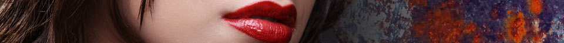

Greyscale
20 April, 2017 – Art. 45
This article focuses on the possibility with CSS to programmatically change a colourful RGB image to greyscale. Note that :hover is used for visualization, something touch-devices do not handle. Either way, do check out the source code for an explanation of the technique. It should also be noted that embedded content served with image tags in HTML leaves it to the browser to scale the images down from a large “master” image whenever the viewport is reduced in width. Modern browsers handle this rather well. Background images, on the other hand, can be optimized both for break points in a responsive design and for download time and/or file size. The latter is important for less capable mobile devices and for slow connections to the Internet. Please refer to the article Responsive images for details.
Embedded content
Fig 1. Hover over the image to change it from greyscale to RGB. This, of course, does not work for touch-screens.
Background images
Fig 2. Ėmir Bukharskīĭ. Bukhara, between 1905 and 1915. Photo by Sergei Mikhailovich Prokudin-Gorskii. Colour composite from three filtered glass negatives. There are no known restrictions on publication for this picture, but please do not reuse the image above as it has been cropped and reduced in size. Instead, download the original high resolution photograph from the Library of Congress’ ‘Prokudin-Gorskii Collection’.
When Russia conquered the Emirate of Bukhara in 1868, the Emirate became a somewhat independent Russian protectorate. Ėmir Bukharskīĭ, who was born Saiyid Mir Alim, was the last emir of Bukhara and finally had to step down and flee to Afghanistan when the Soviet army occupied the emirate in 1920.